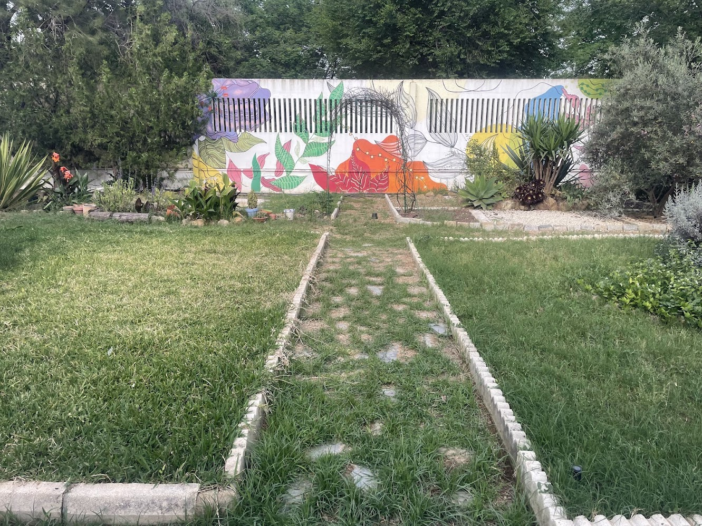

La artesanía como futuro sostenible

Las Jornadas de Artesanía reúnen a profesionales de distintos ámbitos con el objetivo de preservar y poner en valor técnicas tradicionales vinculadas al trabajo manual y al entorno natural.
La artesanía mantiene una relación directa con la naturaleza: los materiales, los procesos y la inspiración provienen del entorno que nos rodea, estableciendo un vínculo sostenible entre creación y medio ambiente.
La artesanía es el diálogo continuo entre el ser humano y la naturaleza.
Durante el evento se realizarán talleres, charlas y demostraciones en vivo.
Actividades destacadas
- Taller de creación de juegos de mesa artesanales
- Elaboración de chapas creativas personalizadas
- Pintura mural participativa
- Creación de bisutería y marroquinería artesanal
- Zona de ocio y descanso con música en directo